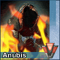

Forums galactiques > Marché galactique : discussions commerciales > Le marché énergetique
Pages : 1
| Gips Renommée de marchand : 17  24/06 ETU 10:48  | Score : 0 Détails Bonjour mesdames messieur
je vais vous presentez le pack seigneur de guerre: pour: - 4 000 000 d'energie - 200 000 métaux je vous offres: - 600 Chasseur B - 100 Frégates d'invasion - 200 Frégates pirate - 100 Frégates de combat Profitez-en sa ne durera pas longtemp... transport à ma charge | ||
| alien Renommée de marchand : -21 29/06 ETU 19:33 | Score : 0 Détails sa fini quand l offre gips ? je vais avoir dans quelque jours les 200 000 metaux mais 4 Mo d energies c est beaucoup trop pour moi ; desoler gips mais moi je veux bien des leems au dieu de 4 Mo d enrgies ou sinon qu est ce que tu m echange contre mes 200 000 metaux ?
| ||
| samarcande Renommée de marchand : -6 30/06 ETU 17:58 | Score : 0 Détails Alien tu est un collégien nommer ... Dans 2 jours la suite
| ||
| alien Renommée de marchand : -21 30/06 ETU 19:05 | Score : 0 Détails chute olivier l arbre / desoler gips pour cette intrusion de samarcande
| ||
| Vlavv Renommée de marchand : 155  30/06 ETU 21:15 | Score : 0 Détails Bon ! Nous savons maintenant que Thegrumo = Julien, et que Samarcande = Olivier. Mais nous aimerions tant savoir comment s'appelle Alien...!
(désolé Gips) | ||
| anubis le mage Renommée de marchand : 0  01/07 ETU 10:59 | Score : 0 Détails moi je veut bien votre pack!
| ||
| Gips Renommée de marchand : 17 02/07 ETU 12:52 | Score : 0 Détails dsl les pack se sont vendu comme des petits pain je n'en n'est plus mais je referer bientot un packs energetik
| ||
| lord asriel Renommée de marchand : 0 03/07 ETU 09:48 | Score : 0 Détails Vlavv tu tiens vraiment à savoir comment s'appelle alien c'est Anthony !
|
Pages : 1
Forums galactiques > Marché galactique : discussions commerciales > Le marché énergetique